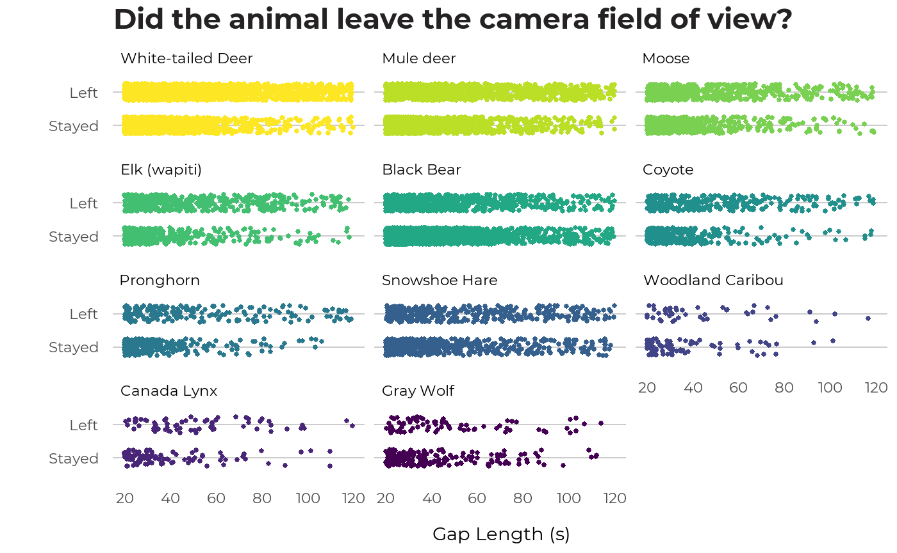

From a pilot study, we determined that if there is a gap of less than 20 seconds between images of the same species at a camera, the animal is almost always still in the view (no evidence of it walking out and returning). Missing the odd time when it leaves the view for less than 20 seconds has little effect on estimates of the total time it is in the field-of-view. At the other end, if there is a gap of >120 seconds between images of the same species, this almost always represented animals leaving and then returning (i.e., the animal is seen walking out of the field-of-view, then walking back in). Gaps of 20-120 seconds are uncertain. These relatively long periods when the animal could be in the field-of-view or not are important when estimating the total durations animals are in the field-of-view, and thus density.
For the 2015 ABMI images, we checked each 20-120 second gap in series’ of native mammals for evidence of the animal leaving and returning. For 2016 and 2017 ABMI images, we checked 20-120 second gaps only for less common species where we had low sample size from 2015. We looked at several images on either side of gaps of 20-120 seconds. In each sequence, the animal was designated as having left the field-of-view during the 20-120 second gap if there was clear evidence of it walking out of the field-of-view and then returning (or a different individual entering the field-of-view). If the animal stayed in one location within the field-of-view, or sequential images showed the animal in disconnected places (as often happens with smaller animals), the animal was assumed to have stayed.
From df_series we filter for images that were flagged as requiring a gap check (gap_check) and had the gaps between images manually classified in 2015 (or later years for some species or studies). Three gap classifications are possible1:
We then create a new variable, left, which indicates whether the animal stayed (gap_class = P) or left (gap_class = L or U).
We can visualize this data in Figure, which displays the same common species seen before. In general, observations where the animal stayed in the field of view are more closely clustered around the 20 second mark, and observations where the animal left the field of view are more evenly spread across the range of gap lengths.

There is a fourth gap class, ‘N’, which is added to flag cases where a None image follows a native mammal image.↩︎